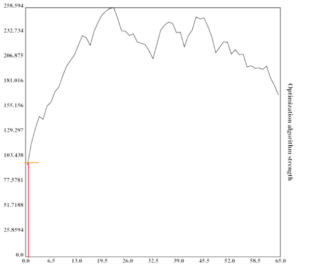

author: niplav, created: 2020-07-22, modified: 2020-12-29, language: english, status: in progress, importance: 7, confidence: highly unlikely
In AI safety, significant time has been spent on the question of the intelligence of AI systems over time, especially during takeoff. An underappreciated argument in the debate has been the idea that the more intelligent an AI system becomes, the better it can search the space of possible optimization algorithms. This post proposes a computational model of this process by creating an n-dimensional search space and then running a very simple hill-climbing algorithm and brute-force search on that space. Possible further improvements to the model are suggested, and implications are discussed.
Libre de la metáfora y del mito
labra un arduo cristal: el infinito
mapa de Aquel que es todas Sus estrellas.
– Jorge Luis Borges, “Spinoza”, 1964
Paraphrasing Roache (2008) the state of play is such that nobody believes the result of a simulation, except the person who performed the simulation, and everybody believes the result of an experiment, except the person who ran the experiment.
– Ryan G. McClarren, “Uncertainty Quantification and Predictive Computational Science“ p. 9, 2018
(Although the quote apparently goes back to Einstein, see “The advancement of science, and its burdens” p. 13, only there with "theory" instead of "simulation").
And let me just make an aside. There’s a lot of meta-debate that goes on in the AI safety community which I don’t understand why: it’s not as if we haven’t got enough real work to do. So now we have meta-debates about whether you should focus on short-term or long-term, or whether we should try to reduce the conflict between the short-termers and the long-termers and it’s like, there doesn’t need to be a conflict.
– Stuart J. Russell, “The flaws that make today’s AI architecture unsafe and a new approach that could fix it” (Episode 80 of the 80,000 hours podcast), 2020
Many regard the trajectory of future AI development as crucial: when will AGI first be developed? Will the development be slow, moderate, or fast (in economic doublings, or in wallclock time)? Will one AGI system become a singleton, i.e come to dominate the whole world (individual vs. collective takeoff)? Will AGIs FOOM, i.e growing unexpectedly fast? And: will there be one or more discontinuity when AI systems recursively self-improve? This text attempts to shine light on the last question and highlight a (supposedly underappreciated) argument for one or more discontinuities in AI takeoff based on a computational model of an AI searching the space of possible optimization algorithms for stronger ones.
In the model, there are three possible ways of an AI improving its intelligence:
The argument presented has the following premises:
If these premises are accepted, it is possible for some search spaces to construct an algorithm that attempts to find the best algorithm according to its optimization power:
This can be visualized quite nicely when one imagines the search space to be one-dimensional with arbitrary values (or perhaps its Gödel number) on both axes (which is of course not the case in reality):

At the first step in the optimization process, the algorithm is very weak and can only search a small portion of the space.
At the second step in the optimization process, the algorithm is slightly better than before and already defeating a local maximum.

The algorithm is now much stronger, and exploring a sizeable fraction of the search space.

It has now practically found the global maximum.
The height of the vertical bar indicates the optimization power of the current optimization process, while the width of the vertical bar indicates the portion of the space searched by the current algorithm. For simplicity, the current algorithm searches in its own vincinity, which also might be a good heuristic (since similar algorithms might have similar properties). The width of the horizontal bar increases as the current optimization algorithm becomes stronger and stronger, which leads to bigger subspaces being searched and in turn better algorithms being found.
This argument might fail in many different ways, e.g. if being more intelligent does not imply being more able to search the space of optimization algorithms quickly (e.g. by compression and searching the compressed data).
However, a conceptual argument is not sufficient here. It would be advantageous to test whether a similarly explosive effect occurs in higher-dimensional spaces with different characteristics.
A computational model can shed some light on whether the argument above would actually bring about discontinuities in the recursive development of artificial intelligence, and can also provide a more concrete ground for disagreement (for by creating an opportunity for people to modify the code and show that different search spaces, search algorithms and external factors generate different conclusions.
On a high level, in pseudocode, the model executes a code similar to this:
space=gen_space()
fill_space(space)
pos=random_pos()
factor=intelligence=1
for i=0, rounds
print(intelligence)
factor*=1.001
intelligence=max(1, space[pos])*factor
pos=climb(space, pos)
pos=search_subpart(space, pos, intelligence)
First, the space is generated and filled with values. Then, the AI repeatedly grows a little bit, does some hill-climbing, and brute-force searches the neighbouring space.
The search space the AI would be inquiring into here is the space of all possible algorithms. While I'm not very knowledgeable about the structure of the space of algorithms, it seems plausible to me that it would be isomorphic to the perfect binary tree with infinite depth (for any given turing machine with a binary tape).
However, since I do not know algorithms that would assign possible values to nodes in the tree, as well as fitting search algorithms, I decided instead to use a Euclidean space to stand in for the space of all algorithms. Specifically, the metric space was even further simplified as an n-dimensional array with equal side-lengths:
dim=5
size=33
space=np.zeros([size]*dim)
However, I might return to more accurate representations of the space of possible algorithms.
The most important decision in this model is how to fill the search space (that is, what values to give the points in the search space).
Since I am very confused about what what a useful approximation of the search space of intelligent algorithms could look like, I start by generalizing the Diamond-Square algorithm to n dimensions.
The Diamond-Square algorithm is a fractal algorithm originally developed for terrain generation.
The generated landscapes often resemble mountain-ranges, they show relatively few abrupt local maxima. An example for a generated landscape:

The size of the space is restricted to dimensions of height/width/length
etc. $2^{n}+1$.
space=create_space(dim, size, minval, maxval, extrfact)
create_space is described in detail in Generalizing the Diamond-Square Algorithm to n Dimensions.
After generating the search space, it is searched for a number of times, each time increasing the intelligence of the current search process by a given factor.
for i in range(0, rounds):
factor*=growth
intelligence=max(1, space[tuple(pos)])*factor
f.write(str(space[tuple(pos)]) + "," + str(intelligence) + "\n")
To avoid algorithms of zero or negative intelligence, the floor of intelligence is set to 1.
The space is searched in two different ways, starting from a random point:
pos=[random.randint(0, size-1) for i in range(0, dim)]
pos=climb(space, pos, size, dim)
pos=search_around(space, pos, size, dim, intelligence)
First, the algorithm executes a very simple hill-climbing procedure. Here, it examines the position next to it in every dimension (in the case of two: in front of the current position, behind of the current position, left to it and right to it), but not the corners, and chooses the direction with the highest value. It then returns the position with the highest value, if that value is greater than the one of the current position.
maxpos=np.array(pos)
for i in range(0, dim):
pos[i]+=1
if 0<=pos[i]<size:
if space[tuple(pos)]>space[tuple(maxpos)]:
maxpos=np.array(pos)
pos[i]-=2
if 0<=pos[i]<size:
if space[tuple(pos)]>space[tuple(maxpos)]:
maxpos=np.array(pos)
pos[i]+=1
return maxpos
After hill-climbing, the model searches the neighbouring region of
the search space for better algorithms. The neighbouring region,
in this case, is a hypercube of dimension $n$ and the size
$1+2*\sqrt[n]{i^2}$, with the current position being the center
of that cube ($i$ is the current intelligence).
The choice of making the size of the hypercube cubic in the intelligence is pretty much arbitrary. I will test with different approaches, e.g. making it linear.
step=round(intelligence**(2/dim))
subpos=[slice(0,0)]*dim
for i in range(0, dim):
subpos[i]=slice(max(0,pos[i]-step), min(size-1, pos[i]+step))
subsection=space[tuple(subpos)]
This subsection of the space is then brute-force searched for a maximum, akin to the agent being able to reason about it and find near local maxima.
mp=np.where(subsection == np.amax(subsection))
pos=np.array([list(mp[i])[0]+subpos[i].start for i in range(0, dim)])
return pos
The position of the maximum found is then returned (often the current position). A new maximum having been found is akin to the agent discovering a more intelligent agent, and modifying itself to become that agent.
This approach is not as efficient as it could be: If the agent is caught at a local maximum, this approach leads to it searching parts of the search space multiple times.
Under this model, I assume an exponential growth as a backdrop. This exponential growth could be Moore's Law or Gross World Product growth, or another uninterrupted exponential growth mode.
This factor is currently set to 1.001 per timestep, or 0.1% growth. If the backdrop is Moore's Law, with a doubling time of 18 months (or 540 days), then a timestep would be
If one assumes GWP growth as a backdrop instead, one gets a doubling every 20 years (…yet. growth mindset) (see Roodman 2020), which works out to
per timestep.
Both assumptions seem not unreasonable to me (although I'm not an expert on such things): A day seems enough time for an AI to design and deploy an improvement to its own source code, although I acknowledge this might change with different AI designs (especially more clean and algorithmic designs might improve faster, while fuzzy & big neural nets might take much longer).
I ran the model several times, varying the size and dimensionality of
the search space. The spaces used were $\mathbb{F}_{8193}^{1}$,
$\mathbb{F}_{16385}^{1}$, $\mathbb{F}_{32769}^{1}$,
$\mathbb{F}_{65537}^{1}$, $\mathbb{F}_{1048577}^{1}$,
$\mathbb{F}_{16777217}^{1}$, $\mathbb{F}_{4097}^{2}$,
$\mathbb{F}_{65}^{3}$, $\mathbb{F}_{129}^{3}$,
$\mathbb{F}_{255}^{3}$, $\mathbb{F}_{65}^{4}$,
$\mathbb{F}_{33}^{5}$, $\mathbb{F}_{17}^{6}$ and
$\mathbb{F}_{9}^{8}$ ($\mathbb{F}_{a}^{b}$ being the vector
space of dimensionality
$b$ for the finite field
with $a$ elements).
Each iteration ran through 2048 timesteps, with a growth of 1.001.
I ran the model only once with each set of parameters, since I discovered that some parts of the model are very slow and take quite some time to execute on my puny hardware (I left the model running through the night).
I would like to run the model with a bigger search space, and more often than once, but unless I optimize the code to be faster, I expect the easiest option would be for me to get access to a computer that is more capable than my current laptop. If you have access to such a computer and want to run the code with other parameters on it, contact me or modify the code yourself (relevant file 1, relevant file 2) and send me the results.